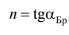

На размещен источник излучения, который через блок питания подключается в сеть. В качестве источника излучения используется
, излучение которого плоскополяризовано.
На консоли расположен . В качестве приемника используется , работающий в фотогенераторном режиме. Фото-ЭДС, возникающая на выводах фотодиода при его облучении, прямо пропорциональна интенсивности падающего на него
света и измеряется вольтметром. Источник и приемник могут
поворачиваться на консолях вокруг диска, по краю которого нанесена шкала, проградуированная в градусах (от 0 до 360°). В центре
диска находится , на котором размещается . Она расположена относительно шкалы так, что нормаль к
ее поверхности проходит через нулевое деление шкалы.
Такое расположение стеклянной пластины на диске позволяет легко
устанавливать угол падения луча лазера на пластинку, а также размещать фотоприемник под углом отражения. На консолях имеются
указатели, позволяющие определять углы расположения излучателя
αи и приемника αп относительно диска.
Данный лазер ориентирован вокруг своей оси так, что его
плоскость поляризации приблизительно параллельна горизонтальной плоскости, т. е. совпадает с плоскостью падения. Поэтому при
падении на стеклянную пластину под углом Брюстера отраженный свет не должен наблюдаться. В реальности в этом случае интенсивность отраженного света принимает минимальное значение.
Изучая зависимость интенсивности отраженного света от угла падения на пластину, по минимуму этой зависимости можно определить угол Брюстера.
По экспериментально измеренному углу Брюстера, принимая во
внимание, что показатель преломления воздуха n1 ≈ 1, из формулы
найдем показатель преломления материала пластины n = n2:

Δn косвенного измерения показателя преломления n по формуле обусловлена погрешностью измерения угла Брюстера ΔαБр и вычисляется по формуле.
Для данной установки ΔαБр ≈ 1° = 0,017 рад.